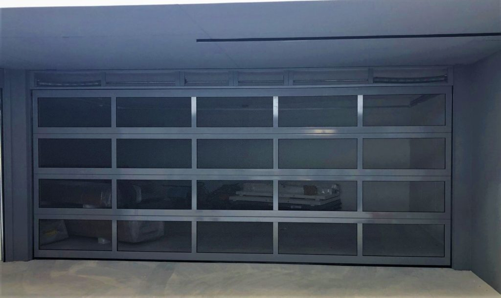

Spezialtore für Öffnungen ohne Standardmaß.
Sonderformate, Rundbögen und Schrägen, große Falttore, verglaste Tore und Nachbauten historischer Tore für Altbau und Denkmalschutz: maßgeschneidert für individuelle Anforderungen.

Wenn der Katalog keine Antwort hat.
Manche Öffnungen sind rund, schräg, ungewöhnlich groß oder denkmalgeschützt. Für solche Fälle entwickeln wir Einzellösungen: von der Konstruktion über das passende Material bis zur Montage.
- Sonderformate, Rundbögen und Schrägen
- Falttore für sehr große Öffnungen
- Verglaste Tore und Tore mit Schlupftür
- Nachbauten historischer Tore für Altbau und Denkmalschutz

Auch bei Sonderformen bleibt das Design stimmig.
Verglaste Flächen, Sonderfarben und ausgefallene Materialkombinationen sind bei Spezialtoren keine Ausnahme, sondern der Regelfall. Wichtig ist uns dabei, dass das Ergebnis zur Architektur passt, ob modern oder historisch.
Bei Nachbauten historischer Tore orientieren wir uns an Vorlagen, Fotos oder erhaltenen Bauteilen und setzen die Optik in einer funktionierenden, alltagstauglichen Konstruktion um.
Beispiele besprechen
Vom privaten Sondermaß bis zur Halle mit Sonderform.
Spezialtore sind kein eigenes Marktsegment, sondern die Antwort auf eine Öffnung, die nicht ins Schema passt: eine schräge Garagenzufahrt, eine denkmalgeschützte Hoffassade oder eine Halle mit ungewöhnlichem Zuschnitt. Wir übernehmen solche Projekte unabhängig davon, ob es sich um ein Privathaus oder einen Gewerbebetrieb handelt.
Ihre Situation schildernVon der Idee zum montierten Spezialtor.
Individuelle Lösungen brauchen einen klaren Prozess. So gehen wir bei Spezialtoren vor.
Anfrage
Sie schildern uns Öffnung, Nutzung und Wunschoptik, gerne mit Fotos oder Skizzen.
Vor-Ort-Termin
Wir nehmen die Öffnung auf, prüfen die baulichen Gegebenheiten und besprechen Möglichkeiten.
Planung & Zeichnung
Sie erhalten eine technische Zeichnung und ein Angebot, bevor die Fertigung beginnt.
Fertigung & Montage
Ihr Spezialtor entsteht nach Zeichnung und wird von unseren eigenen Technikern montiert.
Was wir bei Spezialtoren umsetzen.
Sonderformate
Extrem breite, schmale, niedrige oder hohe Öffnungen fertigen wir passgenau nach Aufmaß.
Rundbögen & Schrägen
Gebogene und schräge Torkanten setzen wir konstruktiv sauber um, ohne Kompromisse bei der Funktion.
Falttore für große Öffnungen
Bei sehr großen Öffnungen ist das Falttor häufig die einzige praktikable Bauart.
Verglaste Tore
Große Glasflächen bringen Licht in den Raum, klar, satiniert oder getönt.
Nachbauten für Altbau & Denkmalschutz
Historische Optik in moderner, alltagstauglicher Konstruktion, abgestimmt auf die Vorgaben des Denkmalschutzes.
Sonderfarben & Materialien
Über die Standardpalette hinaus realisieren wir individuelle Farbtöne und Materialkombinationen.
Gut zu wissen.
Ab wann ist ein Tor ein Spezialtor?
Sobald Öffnung, Form oder Anforderung von den Standardmaßen und -bauarten abweichen, etwa bei Rundbögen, Sonderbreiten oder denkmalgeschützten Fassaden. Wir prüfen beim Vor-Ort-Termin, was in Ihrem Fall zutrifft.
Wie lange dauert die Planung eines Spezialtors?
Das hängt von der Komplexität ab. Nach dem Vor-Ort-Termin erstellen wir eine Zeichnung und ein Angebot, danach beginnt die Fertigung. Für einen konkreten Zeitplan sprechen Sie uns direkt an.
Arbeiten Sie auch mit Architekten und Denkmalämtern zusammen?
Ja, bei Bedarf stimmen wir Konstruktion und Optik mit Architekten oder der zuständigen Denkmalbehörde ab, damit das Ergebnis allen Vorgaben entspricht.
Ihre Öffnung. Unsere Lösung.
Schildern Sie uns Ihre Anforderung, gerne mit Fotos oder Skizzen. Wir melden uns innerhalb eines Werktags.